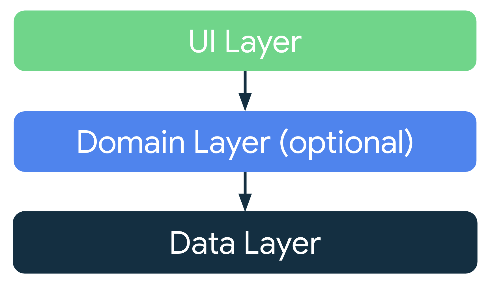

NaTour21 - Let's go
1. Target utenti - statistiche
In seguito all’analisi delle informazioni statistiche sull’escursionismo italiano è stato individuato un preciso target utenti. Attorno ad esso è stato possibile costruire la migliore esperienza utente possibile, basata sulle abitudini e sulle attitudini del bacino di utenza rilevato. Il software si pone come uno degli obiettivi principali, infatti, un'adeguata facilità di utilizzo, per andare incontro ai bisogni della più grande possibile fetta di utenti.
2. NaTour in breve

2.1. Funzionalità offerte
NaTour offre tutte le funzionalità basilari necessarie a una piattaforma social, risultando estremamente familiare agli utenti. Tra queste ritroviamo:
- Autenticazione tramite social (Google e Facebook);
- Visualizzazione e creazione di itinerari e relativi post;
- Ricerca e filtraggio degli itinerari in base a:
- Difficoltà, durata, accessibilità ai disabili;
- Posizione geografica, con raggio in km;
- Conversazioni private con altri utenti.
2.2. Requisiti
Talvolta è si ha il bisogno di consultare una mappa, o visualizzare delle indicazioni per un certo tragitto, per questo è necessario essere in possesso di:
- Account NaTour;
- Accesso a internet;
- Permessi di accesso alla posizione.
3. Architettura
Per uno sviluppo pulito ed efficiente sono state seguite le linee guida dettate dalla Clean Architecture, creata da Robert C. Martin (Uncle Bob) nel 2012.
Attenendosi soprattutto ai principi SOLID (applicabili a qualsiasi linguaggio OO), il codice è particolarmente prone ad espansioni ed aggiunta di nuovi moduli, strizzando l'occhio alla retrocompatibilità. Questo approccio si è rivelato fondamentale per evitare una forte dipendenza dalle librerie native di Android.

4. Servizi AWS

4.1. AWS Cognito
Cognito è un servizio di tipologia PaaS, sfruttato per l'autenticazione utente. Utilizza OAuth2 per la delega degli accessi tramite identità federate. Presenta integrazione con altri servizi, che permette la gestione delle politiche di accesso alle risorse fornite da questi ultimi.
4.2. AWS EC2
Servizio di tipologia IaaS che offre ambienti di elaborazione virtuale, compatibile con AWS Autoscaling. Questo servizio è stato utilizzato per il deploy del servizio REST, in esecuzione su Ubuntu Server LTS, OS scelto per limitare l'utilizzo superfluo di risorse dell'istanza. L'accesso all'istanza virtuale è effettuato tramite SSH, quando necessario.
4.3. AWS RDS
Amazon RDS ha permesso la configurazione e l’utilizzo del database relazionale (MySQL/MariaDB) per la persistenza dei dati. Questo servizio fornisce capacità ridimensionabili efficiente, automatizzando task tipiche di amministrazione hardware e software, oltre ai backup.
4.4. AWS S3
Il Simple Storage Service (Amazon S3) permette l’archiviazione di oggetti in modo scalabile, sicuro e veloce. La classe di archiviazione S3 è progettata per offrire una durabilità dei dati pari al 99,99999999999% (eleven 9s) degli oggetti per un determinato anno, che equivale a una perdita di oggetti media dello 0,00000000001%! Esso è stato adoperato in merito alla preservazione permanente dei file immagine caricati dagli utenti;
4.5. AWS Lambda
La scelta di questo servizio è stata dettata dalla necessità di fornire consistenza al pool di utenti su Cognito. Tramite l'utilizzo di un trigger post-conferma non possono esserci discrepanze tra pool e database.
5. Google Maps Platform
- MapsAPI: per la visualizzazione interattiva di mappe statiche e dinamiche;
- PlacesAPI: per il recupero di informazioni sui posti tramite richieste HTTP;
- DirectionsAPI: per il calcolo del percorso tra diverse tappe:
- Utilizzano una richiesta HTTP per ritornare le direzioni tra località in formato JSON o XML.
- Le DirectionsAPI, in quanto web service, sono state integrate nel Rest Service proprio del software.

6. Spring
Framework Java che fa largo uso della riflessione e dell'inversione di controllo (IoC). Tramite annotazioni permette di ridurre codice boilerplate, si adatta al pattern MVC.
- È scalabile;
- È portabile, grazie a Java;
- È estensibile attraverso l'utilizzo di moduli dedicati a funzionalità specifiche;
- Si integra con molte librerie terze;
- Ideale per creare REST API.

6.1. Spring Boot
Estensione del framework Spring che facilita la gestione delle dipendenze necessarie:
- Presenza di dipendenze starter;
- Non si necessita di una configurazione XML;
- Web server embedded (Apache Tomcat).

7. Client
7.1. Applicazione nativa o ibrida?
Considerato il target di clienti particolarmente esigente e la priorità data alle prestazioni è stato scelto di sviluppare un client mobile nativo, vista anche la richiesta iniziale della sola app per Android.
| Nativa | Ibrida |
|---|---|
| Performance ottime | Più lenta |
| Costosa da sviluppare, specialmente su più OS | Manutenibili, singola codebase |
| Utilizzo di SDK dedicati | Linguaggi web e framework multipiattaforma |
7.2. Linguaggio scelto
Premessa: Java e Kotlin possono coesistere all'interno dello stesso progetto!
È stato scelto Kotlin come linguaggio OO per quattro principali motivi:
- Lo sviluppo di librerie Android è ad oggi incentrato sempre di più sulle funzionalità offerte da Kotlin;
- Sintassi snella e di facile apprendimento;
- Presenza di meccanismi di sicurezza volti a ridurre gli errori da parte dei programmatori;
- Estensibilità di classi pre-esistenti, ma senza effettuare modifiche alle librerie, in pieno stile open-closed (la O di SOLID).

7.3. Pattern scelto
Sono stati "fusi" due pattern , ovvero MVVM e MVI, per rimediare ad alcune lacune. I problemi individuati col primo pattern si riassumono in:
- Difficoltà di riusabilità sia per le View che per i ViewModel;
- Registrazione a molteplici observables nello stesso ViewModel;
- View e ViewModel possono essere soggetti ad avere un coupling stretto.
L’integrazione dei due pattern architetturali sopracitati culmina nella nascita di un nuovo pattern, chiamato dagli sviluppatori Android UDF (Unidirectional Data Flow) :
- Presenza di StateHolder, necessari per ogni ViewModel nella maggior parte dei casi;
- Richiamo alle macchine di stato e agli Statechart;
- Event e Effect, che si interpongono tra View e ViewModel.

8. Strumenti di testing
8.1. Firebase
- Analytics
- Crashlytics
- Performance